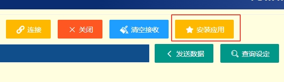
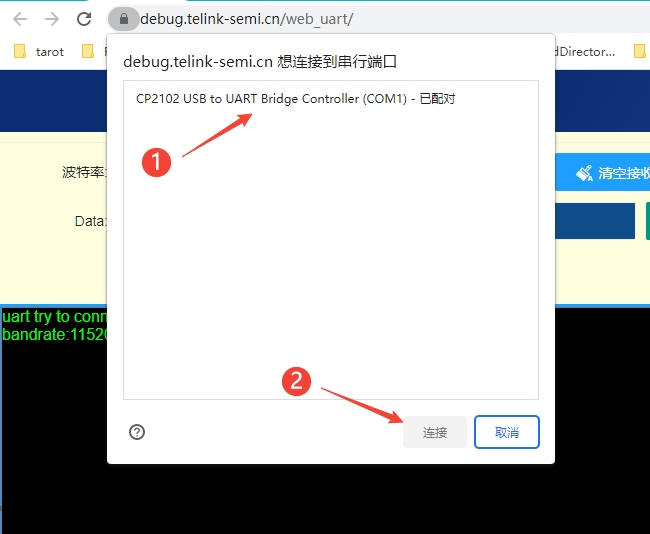
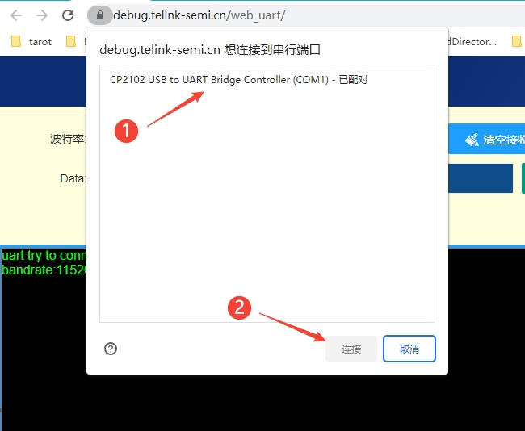

Web Uart¶

工具介绍¶
Web Uart
Web Uart是一个网页串口工具，可以进行串口数据收发，其中针对mboard 模块板的ZigBee应用做了一些特殊定制，可以配置mboard的ZigBee功能。
使用说明¶
硬件连接
通过USB转UART板子，将模块连接到PC。如果使用官方的底板+模块，因为mboard底板上自带了USB转串口芯片CP2102，所以只需要下载安装CP2102驱动，然后通过USB接口连接PC。CP2102 驱动下载网址
官方底板：

打开 Web Uart
点击"install"可将网页以原生应用的方式安装在电脑/手机上，并自动添加桌面快捷方式，用户也可将应用固定任务栏处。 同时采用离线存储和后台同步技术，网页可在没有网络的条件下使用。

使用软件
- 选择波特率，第一次用，没改配置，默认 115200 即可。
- 点击 "连接"后，选择想要通讯的uart端口
 

异常处理
使用时出现异常，可检查硬件并刷新网页后再次尝试。
ZigBee设备配置¶
一个典型的ZigBee mesh网络如下所示，新设备入网时，网络中必须有一个coordinator设备：

mboard模块板构建ZigBee网络步骤如下：
若使用旧版BDT工具进行下载，需先将下方固件下载到本地电脑端，若使用Web BDT，则可在线下载固件进芯片。
- 下载 Mars_B91_ZigBee_C.bin 到其中一个模块板(coordinator)
- 下载 Mars_B91_ZigBee_R.bin 到其他多个模块板(router)
- coordinator 设备先上电，此时模块板上led灯亮，表示允许其他设备入网（3分钟内）
- router 设备上电，router设备led闪烁，表示入网成功
- 组网成功后，通过UART发送数据即可实现广播或者定点传输数据（UART发送一笔数据最长64字节）
固件默认相关配置说明:
| 模块板接口 | 功能说明 |
|---|---|
| TX/RX | UART TX/RX，8数据位，1停止位，无奇偶检验，波特率默认为115200 |
| PC2 | 可接主控MCU，或者按键，上电初始化时需保持未按下状态 对于coordinator， 单击：限定时间内允许入网；双击：关闭入网许可 对于rounter， 单击：广播发送自身网络地址； 双击：广播用户自定义设备ID号；长按：恢复出厂设置 |
| PD2，PD1 | 模式配置控制IO（使用过程中可动态切换模式，切换间隔与按键长按的时间一致，默认为两秒）: 00: 广播透传模式，uart收到任何数据都通过ZigBee协议广播出去，收到数据的设备通过uart打印出数据 01: command模式，功能码使用示例见后面的描述 10: 定位模式，router收集移动模块定位数据，定期发送给coordinator 11: 移动模式，router定期广播自定义ID号 |
说明
- 设备广播自身的ID号时，广播数据中会带有头部 5A A5；
- 设备广播自身短地址时，广播数据中会带有头部 A5 5A；
- 设备广播自身长地址时，广播数据中会带有头部 A5 A5；
- 打开设置命令应答（默认关闭）后，command模式下，发送设置相关的command命令，设备返回的应答中会带有尾部 5A 5A；
设备出厂时的默认设定：
| 功能 | 默认设置 | 功能 | 默认设置 |
|---|---|---|---|
| UART回显 | 关闭 | UART波特率 | 115200 |
| 设置指令的命令应答(后缀5A A5) | 不添加 | 设备ID | 0x00 |
| 设备广播自身ID的周期 | 2秒 | PWM设定 | 不开启 |
| 短按检测时间 | 200毫秒 | 长按检测时间 | 2秒 |
| 单击按键后协调器限定的入网时间 | 180秒 | / | / |
| 入网时的触发IO | GPIO_PA5 | 入网时的触发IO的触发电平 | 低电平 |
| 死机时的触发IO | GPIO_PA6 | 死机时的触发IO的触发电平 | 低电平 |
透传模式系统框图如下所示

提示
下方是其他模式的说明，若你只需使用ZigBee透传模式则不必往下看了。
ZigBee设备command模式下的配置¶
gpio_group和pwm_group数组定义如下：
const gpio_pin_e gpio_group[] = {
GPIO_PD3,GPIO_PE0,GPIO_PA5,GPIO_PA6,
GPIO_PA7,GPIO_PB2,GPIO_PB3,GPIO_PB4,
GPIO_PB5
};
const pwm_pin_e pwm_group[][2] = {
{PWM_PWM0_PB4,0},
{PWM_PWM1_PB5,1},
{PWM_PWM3_N_PD3,3},
{PWM_PWM3_PE0,3}
};
配置为command模式时，命令格式如下（reurn为关闭回显和命令应答，执行完指令后UART的返回的数据；除了功能码0x00，其他控制命令长度固定；设定的值断电可保存）：
| code | example | example describe | return | support |
|---|---|---|---|---|
| 0x00 | 00 5C 29 11 22 33 | 往网络地址为0x5c29的设备发送数据 11 22 33 | NULL | ALL |
| 0x01 | 01 | 打开回显功能 | NULL | ALL |
| 0x02 | 02 | 关闭回显功能 | NULL | ALL |
| 0x03 | 03 00 25 80 | 设置UART波特率为0x2580(9600，复位后生效) | NULL | ALL |
| 0x04 | 04 B4 | 设置限定入网时间为0xB4秒 | NULL | Coordinator |
| 0x05 | 05 10 | 设置设备ID号为0x10 | NULL | Router |
| 0x06 | 06 05 | 设定广播ID的周期为0x05秒 | NULL | Router |
| 0x07 | 07 28 | 设置短按检测时间为0x28毫秒（复位后生效） | NULL | ALL |
| 0x08 | 08 01 F4 | 设置短按检测时间为0x01F4毫秒（复位后生效） | NULL | ALL |
| 0x09 | 09 | 广播发送自身短地址 | NULL | ALL |
| 0x0A | 0A | 广播发送自身长地址 | NULL | ALL |
| 0x0B | 0B | 广播发送自定义ID号 | NULL | Router |
| 0x0C | 0C 00 01 | 设置引脚gpio_group[0x00]为0x01(高)电平 | NULL | ALL |
| 0x0D | 0D 01 | 读取引脚gpio_group[0x01]电平 | 01（高电平） | ALL |
| 0x0E | 0E 02 00 | 设置设备（允许）入网时引脚gpio_group[0x02]为0x00(低)电平 | NULL | ALL |
| 0x0F | 0F 03 00 | 设置设备死机时引脚gpio_group[0x03]为0x00(低)电平 | NULL | ALL |
| 0x10 | 10 00 00 00 27 10 32 | 设置引脚pwm_group[0x00]为PWM功能，频率为0x00002710HZ，占空比为0x32% | NULL | ALL |
| 0x11 | 11 | 关闭所有设定的PWM功能 | NULL | ALL |
| 0x12 | 12 | 重启最后一次配置的PWM功能 | NULL | ALL |
| 0x13 | 13 | 返回0x01代表在正确模式下 | 01 | ALL |
| 0x14 | 14 | 显示自定义ID号 | 10 | Router |
| 0x15 | 15 | 显示广播自定义ID的周期 | 05 | Router |
| 0x16 | 16 | 显示限定入网时间（单位为秒） | B4 | Coordinator |
| 0x17 | 17 | 返回0x01代表开启了回显功能 | 00 | ALL |
| 0x18 | 18 | 显示PAN_ID | 06 10 | ALL |
| 0x19 | 19 | 显示coordinator的长地址 | A4 C1 38 D1 97 0B 25 3C | Router |
| 0x1A | 1A | 显示本设备长地址 | A4 C1 38 8E D6 90 F7 E0 | ALL |
| 0x1B | 1B | 显示本设备短地址 | 44 20 | ALL |
| 0x1C | 1C | 显示本设备类型 00:D_COORDINATOR 01:ROUTER 02:END_DEV | 01 | ALL |
| 0x1D | 1D | 显示按键的短按时间(2B)和长按时间(1B)，单位:秒 | C8 07 D0 | ALL |
| 0x1E | 1E | 显示入网和死机时的触发IO编号(gpio_group)及触发电平 | 02 00 03 00 | ALL |
| 0x1F | 1F | 显示PWM引脚编号(pwm_group，1B，ff表示未选)周期(4B)和占空比(1B) | 00 00 00 27 10 32 | ALL |
| 0x20 | 20 | 显示所有数据 | 详情见下方描述 | ALL |
| 0x21 | 21 | 打开设置指令的命令应答(后缀5A A5) | 5A 5A | ALL |
| 0x22 | 22 | 关闭设置指令的命令应答(后缀5A A5) | NULL | ALL |
| 0x30 | 30 | 设置参数为默认值 | 5A 5A | ALL |
| 0x31 | 31 | 复位芯片 | NULL | ALL |
| 0x32 | 32 | 恢复出场设置 | NULL | ALL |
在command模式下，关闭回显和命令应答后，发送指令0x20，UART返回所有设定相关的数据
- example: 01 01 C2 00 06 10 A4 C1 38 D1 97 0B 25 3C A4 C1 38 8E D6 90 F7 E0 44 20 14 00 00 02 C8 07 D0 02 00 03 00 00 00 00 27 10 32 00 01
- 字段描述：
| describe | length | example | example describe |
|---|---|---|---|
| 当前模式 | 1 | 01 | 当前为command模式 |
| 复位后的波特率 | 3 | 01 C2 00 | 复位后波特率为0x01c200 |
| PAN ID | 2 | 06 10 | PAN ID为0x0610 |
| coordinator长地址 | 8 | A4 C1 38 D1 97 0B 25 3C | 0xA4C138D1970B253C |
| 自身长地址 | 8 | A4 C1 38 8E D6 90 F7 E0 | 0XA4C1388ED690F7E0 |
| 自身短地址 | 2 | 44 20 | 0X4420 |
| 限定入网时间 | 1 | 14 | 限定入网时间为0x14秒 |
| 回显功能 | 1 | 00 | 00：未开启回显 01：开启回显 |
| 设备ID | 1 | 00 | 设备ID为0x00 |
| ID广播周期 | 1 | 02 | 广播设备ID的周期为0x02秒 |
| 短按检测时间 | 1 | C8 | 短按检测时间为0xC8毫秒 |
| 长按检测时间 | 2 | 07 D0 | 长按检测时间为0x07D0毫秒 |
| 入网时的触发IO编号(gpio_group)及触发电平 | 1+1 | 02 00 | 入网触发IO为gpio_group[2]，触发电平为0x00 |
| 死机时的触发IO编号(gpio_group)及触发电平 | 1+1 | 03 00 | 死机触发IO为gpio_group[3]，触发电平为0x00 |
| PWM引脚pwm_group编号(ff表示未选)周期和占空比 | 1+4+1 | 00 00 00 27 10 32 | 设置pwm_group[0x00]引脚为PWM功能 频率为0x00002710HZ，占空比为0x32% |
| 设置指令的命令应答(后缀5A A5) | 1 | 00 | 00：不添加；01：添加 |
| 设备类型 | 1 | 01 | 00:D_COORDINATOR 01:ROUTER 02:END_DEV |
配合BootLoader程序加载app bin¶
注意事项¶
- BootLoader和工具对加载的bin文件未做检测
- 因web uart与cp2102驱动兼容性不够好，通过网页连接uart时，每次需要对设备进行插拔一次
- Mars_B91的主控芯片为TLSR9218A，FLASH大小为1MB，app bin从FLASH的0x8000地址处开始存储，所以其大小不能大于992KB
使用步骤¶
- 通过下载工具（如BDT或WEB BDT）将 boot bin下载到flash 0地址处
- 按下SW1后再给板子上电/复位，则会进入接收app bin模式，若芯片复位后的第一时间未发现SW1按下，则会从0x8000地址处取指执行(不管此处有没有正确的bin)
- 进入接收app bin模式后不会再检测按键状态，核心板上的LED会每隔1秒闪烁一次
- 安装好USB转TTL UART芯片的驱动，Mars_B91底板用的是CP2102
- 打开Telink Web UART网页工具，配置波特率为500000后连接UART
- 点击更新固件按钮，选择待加载的bin，按钮处会显示加载进度，若程序加载成功，按钮处最后会显示Success.并且MCU会跳转到0x8000地址处执行
- 测试app bin
BOOT程序流程简介¶
- boot程序中开辟了100KB的UART接收buffer，网页工具将app bin以100KB进行分包，每发100KB数据后并不会等待MCU的响应，而是会等待一个固定的时间后（此时MCU会将数据写进FLASH，这个时间应该比等待的时间短）再发下一笔数据，最后会发送一笔5Bytes长度的校验包，其中包含了网页工具端计算出来的CRC32值，MCU对比自身计算出来的CRC32，若相等则跳转至0x8000地址处取指执行，若不等则清空状态等待重新接收app bin，最后MCU会向网页工具发送确认包，确认包中包含了接收总长度和CRC值，网页工具对比自身计算的值后，将最终状态显示在页面上。
- 待改进:1、发送完每一笔数据后，应该等待MCU发送状态包，根据包数据，进行重发等操作。2、发送app bin时波特率最好可变：初始化MCU UART波特率为115200，网页工具更新固件时，会通过115200的波特率给MCU发送等会发送固件时候使用的波特率。MCU会改变自身波特率后再进入接收app bin模式